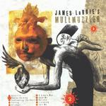

| Artist: | (James La Brie's) Mullmuzzler |
| Title: | 2 |
| Label: | Magna Carta MAX-9056-2 |
| Length(s): | 52 minutes |
| Year(s) of release: | 2001 |
| Month of review: | [10/2001] |
| 1) | Afterlife | 5.21 |
| 2) | Venice Burning | 6.26 |
| 3) | Confronting The Devil | 6.20 |
| 4) | Falling | 3.52 |
| 5) | Stranger | 6.32 |
| 6) | A Simple Man | 5.20 |
| 7) | Save Me | 4.11 |
| 8) | Believe | 5.00 |
| 9) | Listening | 4.14 |
| 10) | Tell Me | 5.14 |
Friendly piano and keyboards open Venice Burning, but the peace and quiet is of short duration. String like keyboards in the back on this driven track that is very much in the vein of Dream Theater. The vocal parts are again quite good and the song is as a whole an appealing one with plenty of variation but without overdoing it. A combination of catchiness and progressive fire.
Led Zeppelin's Kashmir comes to mind in the opening of Confronting The Devil. Something definitely Arabic about the melodies in this track. There seems to something of a trend here: I am expecting the qualities of the songs to diminish at some point, but it simply does not seem to happen. Okay La Brie is singing at the top of his lungs a bit too much, but compositionally and melodically this is again a very good track. Acoustic guitar, the plodding Kashmir overall feel make it sound quite different from the rest.
Falling is an acoustic ballad with softly humming bass, percolating piano and rather hasty sung vocals. A light footed pop song, but certainly not without appeal. Dark tones we find on Stranger, dark keyboards, somber piano, long low chords on the electric guitar gives way to some complex material in which the keyboards feature strongly. On the first verse the vocals sound as coming over radio, later the vocals are normal again. Plenty of strong keyboard work by Guillory on this one. The vocal melodies are again well taken care of as well, except for the short part where La Brie sings all by himself. A moody guitar closes down this track. Subtle.
We move right into the catchy opening of Simple Man. The first vocal part of this track however is quite different, but the catchiness returns later on. Although the catchy part is not bad, the song is a bit too mellow for my tastes.
Save Me is back to heavy progressive rock with plenty of variation and a rather threatening feel to it. This is mostly evidenced by the keyboards and the droning rhythm section. Believe strongly contrasts with this track with its melodic acoustic guitar and easy going percussive feel. The melody sounds somewhat familiar. A romantic tune.
Listening is a moody track with soft bluesy guitar and piano. The rhythm section takes a more modern approach, the guitar is vaguely Latin and La Brie is soft spoken. Tell Me closes down the album: the keyboards sound is a very modern here, the combination a sawing rhythm guitar works wonderfully well. This song surpasses everything we have heard so far on this album: great vocal melodies, drama,
The artwork on the front cover is not very appealing.